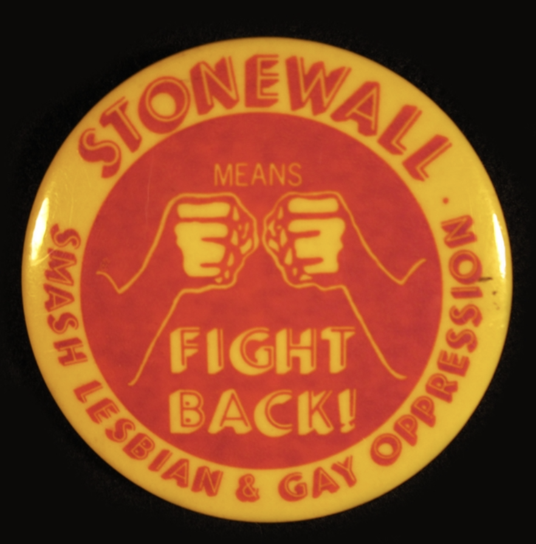
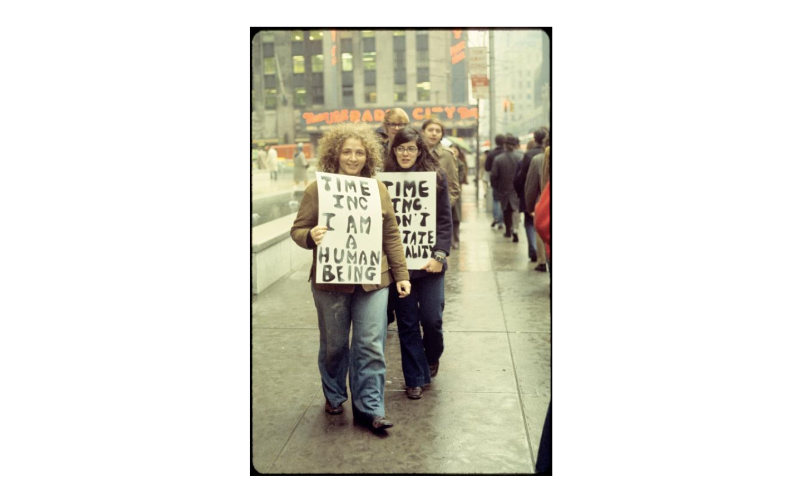

Stonewall is seen as a monumental moment for the queer rights movement. This is because it fundamentally reshaped the way queer people responded to their own oppression. Stonewall empowered queer people to fight their oppression and prompted them to unite through activist groups.
Citation: Fischer, Roger A., “Stonewall GLBT button,” Digital Public Library of America, https://dp.la/item/2cb85485461ab86890b880f51be7b915.
Citation: Davies, Diana, “Gay Liberation Front pickets Time, Inc. [5],” Digital Public Library of America, https://dp.la/item/b29570800390f8729e05b2bd7af9178c.
This picture, taken by photojournalist Diana Davies, shows two lesbian women picketing in front of the Time-Life Building in New York City as part of a Gay Liberation Front protest. One woman holds a sign stating “I am a human being.” The second woman’s sign is partially blocked. It reads, “Time, Inc. Don’t dictate morality.” The Gay Liberation Front was founded in July 1969, largely as a result of Stonewall. They fought for civil rights for gay people and protested racism and capitalism. They also criticized the institution of marriage and the traditional family. The GLF was part of an activist movement that rejected those 1950s homophile movements that still allowed gay people to be classified as defective morally or medically.